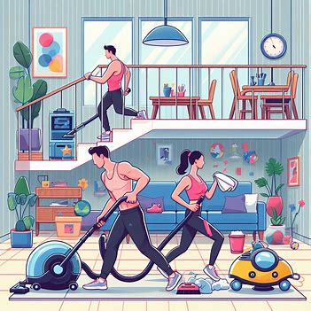
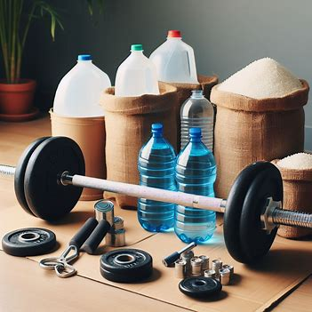
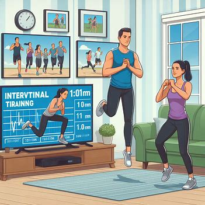
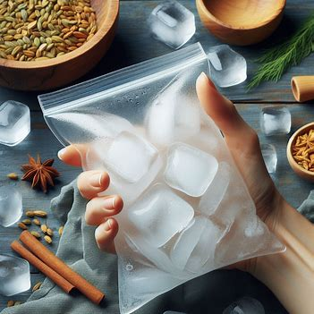

Welcome to our page dedicated to health and wellness hacks! Here, you'll find a wealth of ingenious tips and tricks designed to optimize your well-being in every aspect of life. From clever shortcuts for staying hydrated and incorporating exercise into your daily routine to inventive ways to boost your mood and energy levels, our collection of hacks covers everything you need to thrive physically, mentally, and emotionally. Whether you're looking to streamline your self-care routine, make healthier choices more accessible, or simply add a bit of fun and creativity to your wellness journey, you'll discover practical and innovative solutions right here. So, dive in, explore, and unlock the secrets to a happier, healthier you!
Two-for-One Workout

Combine household chores with exercise by turning cleaning sessions into mini workouts. Vacuuming, sweeping, and scrubbing can all help you break a sweat and burn calories.
DIY Gym Equipment

Repurpose household items like water jugs, cans, or bags of rice as weights for strength training exercises. Get creative with what you have on hand to get a workout in without expensive equipment.
Interval Training During TV Time

Make the most of commercial breaks during your favorite TV show by doing quick bursts of exercise like jumping jacks, lunges, or squats. You'll stay active while catching up on your favorite programs.
Morning Stretches in Bed
Start your day with a series of gentle stretches while still lying in bed. This helps wake up your muscles, improve flexibility, and set a positive tone for the day ahead.
Homemade Ice Packs

Fill a resealable plastic bag with a mixture of water and rubbing alcohol, then freeze it. The alcohol prevents the water from freezing completely, creating a flexible ice pack that molds to your body for soothing sore muscles or injuries.